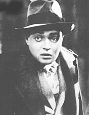

Thursday, January the 27th, 2005
back to: title, date or indexes
Here is an accurate account of a dream I had just before I woke up this morning.
I was in an unknown seaside resort with a companion, whose identity was hazy. We were walking, and passed a couple of men of Mediterranean appearance, gaunt, and dressed in very plain, neat brown coats and hats. They had a film noir air. If they hadn't been so thin Peter Lorre would have been a good choice to play one or both of them. I turned to my companion, pointed at one of the men, and said “He just said ib”. The man at whom I had pointed thrust out his hand, clad in a brown (leather?) glove and clutched me around the throat. He fixed me with a stare more intense than menacing, and withdrew his hand, leaving the glove in place. “That is the Glove of Ib,” he announced, “Now read this.” He handed me a pamphlet, on which was written “He has weak Bomba. His Bomba is not good”. I understood that this referred to me. The words were printed in heavy black block capitals on brown paper and reminded me of a Vorticist tract like Wyndham Lewis' BLAST. The Glove of Ib, around my neck, was not uncomfortable, but I wanted to be rid of it. The Peter Lorre figures had disappeared—time had passed—and I walked around the seaside resort, alone now, trying to find them. Then I woke up.
What can it all mean? I should point out that I did not wake to find myself being strangled, nor had my neck become entangled by a stray dressing-gown cord or length of string. One thing of which I am sure is that I must work hard today on strengthening my Bomba.

Lorre & Lewis
ADDENDUM : Last week I had one of those dreams in which you read or write something of breathtaking profundity. Usually, the earth-shattering words are forgotten as soon as you awake, and the morning is spent in a state of frustration, trying to retrieve what seemed so meaningful. On this occasion, I was lucky enough to recall what I had dream-written, and I can thus share my dazzling insight with you. It was a poem, and—in its entirety—read as follows:
We are steam, and we mean what we mean
Hooting Yard on the Air, February the 2nd, 2005 : “Scrofula and Penitence in the Middle Ages” (starts around 03:38)
Hooting Yard on the Air, January the 25th, 2006 : “A Series of Unfortunate Cows” (starts around 14:31)